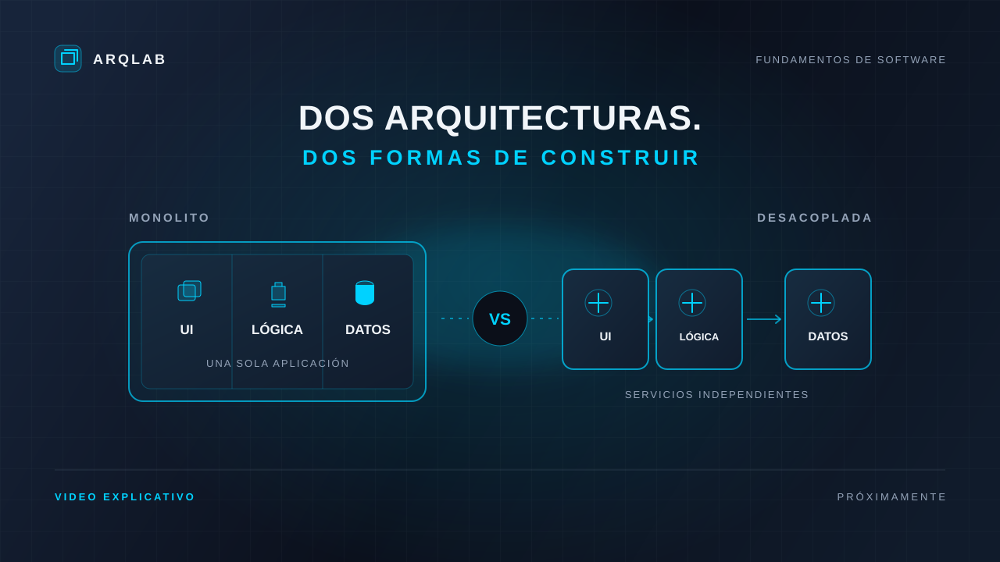

Una aplicación, un despliegue.
UI, lógica y datos viven en una sola aplicación. Es sencilla de iniciar, pero un cambio suele requerir desplegarla completa.
FUNDAMENTOS DE SOFTWARE
Descubre cómo se organiza una aplicación y qué cambia cuando sus partes trabajan juntas o de forma independiente.
Explorar arquitecturasLABORATORIO INTERACTIVO
Cambia de arquitectura y observa cómo se transforma la relación entre los componentes.
La interfaz, la lógica y los datos forman una aplicación integrada. Un cambio puede afectar al sistema completo.
UI, lógica y datos viven en una sola aplicación. Es sencilla de iniciar, pero un cambio suele requerir desplegarla completa.
La aplicación se divide en servicios que se comunican entre sí. Cada servicio puede cambiar y desplegarse de manera independiente.
VIDEO EXPLICATIVO

REPASO RÁPIDO
Tres preguntas por tema para comprobar las ideas clave.